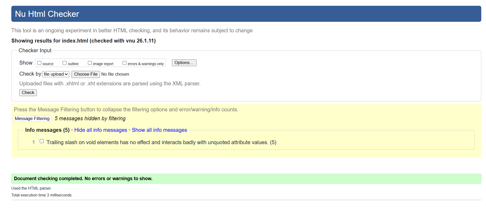
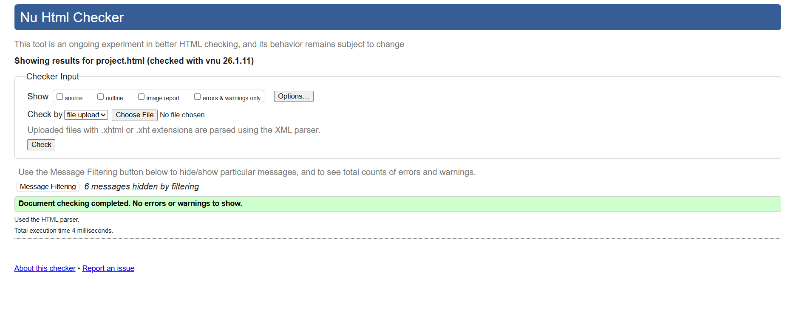
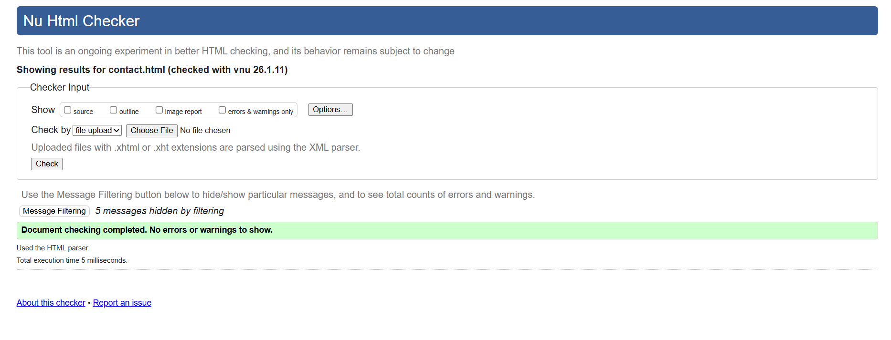
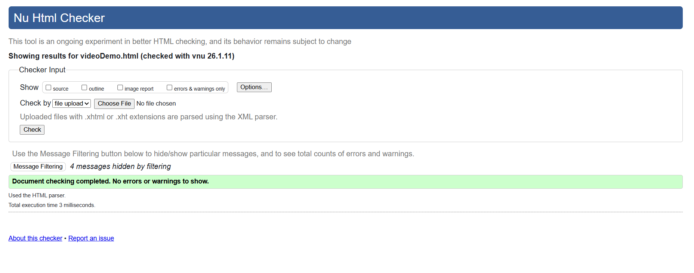
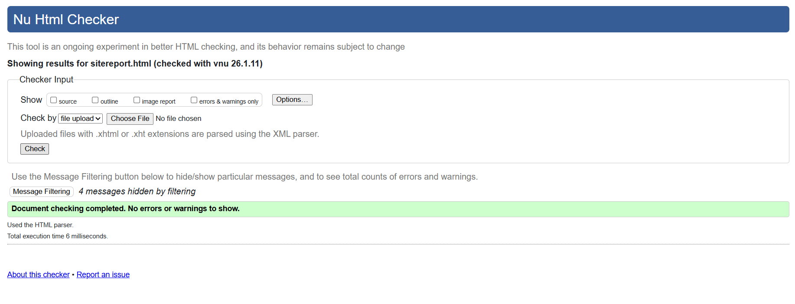
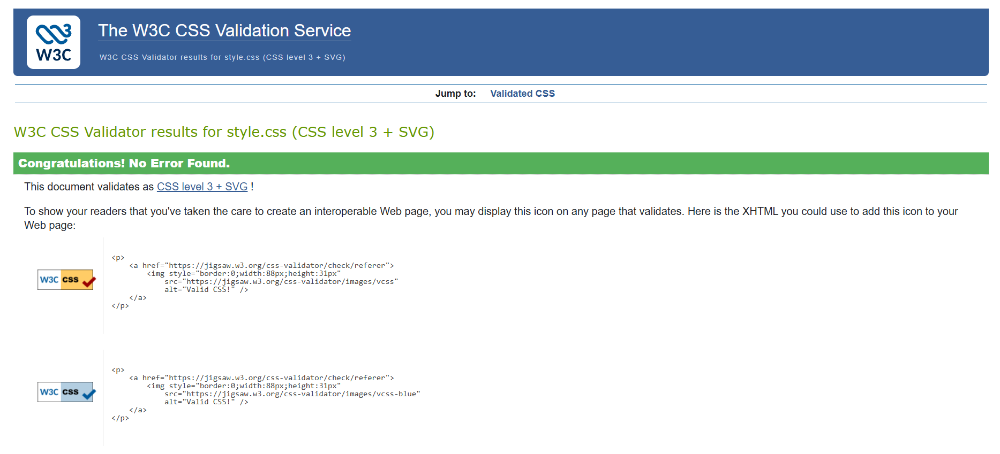

Site Report
Introduction
This website was completed for the purpose of the CSY1063 Web Development module. The goal of this project was to create a responsive portfolio site using HTML, CSS, and GitHub while adhering to current developments on the internet for website standards. I previously knew the fundamentals of HTML and CSS about two years ago, but I had not used them since then. This assignment has given me the chance to update and enhance my basic knowledge. While learning newer concepts such as CSS Grid, responsive design, and proper use of semantic HTML.
Working on this project allowed me to go back and refocus on HTML and CSS, which then let me apply my knowledge of how the websites are organized and designed. It further enabled me to point out loopholes in my early gain knowledge and help increase my confidence in writing well-structured code.
Development Process and Challenges
During the development process, I learned how to use semantic HTML elements such as header, nav, main, section, and footer instead of relying only on div tags. One of the biggest challenges I faced was using CSS Grid correctly to create responsive layouts. Initially, my layouts would break on smaller screens, but through testing and debugging using browser developer tools, I learned how to use media queries to redesign layouts for mobile devices.
Design Decisions
My site design is simple and clean, with neutral background colors and good contrast for make it more readable. A sans serif font was chosen for a modern feel, a professional appearance. Design and navigation are from simple portfolio themes websites that also helped affect my design to keep everything minimal and user-friendly.
Reflection and Learning
The contact page includes both my contact details and a mailto form, as server-side scripting is outside the scope of this module. I also included a video demonstration page to explain the website structure and CSS concepts used. Throughout the project, I used GitHub to manage my work and committed changes. Overall, this project improved my confidence in web development and gave me a solid foundation in responsive design, debugging, and version control.
Validation check
Screenshots of HTML and CSS validation reports have been included to show that the code follows web standards. It was checked with the help of validator.






Video demonstration link: Click here to view